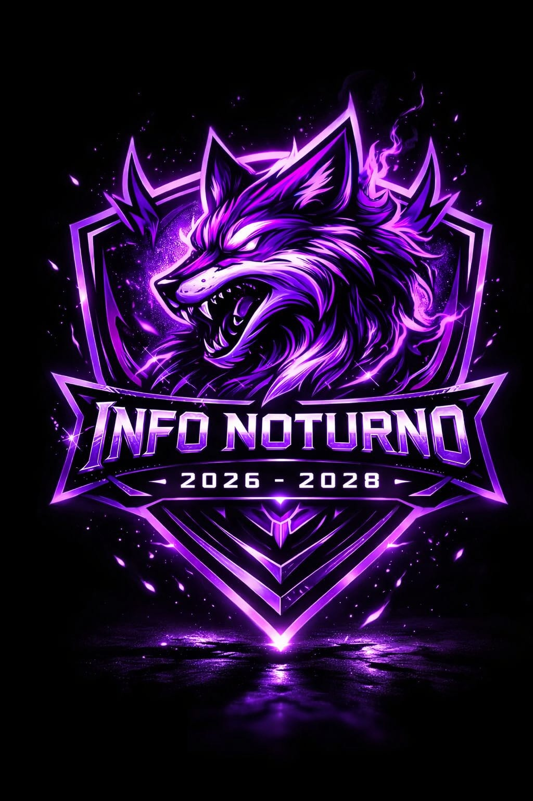
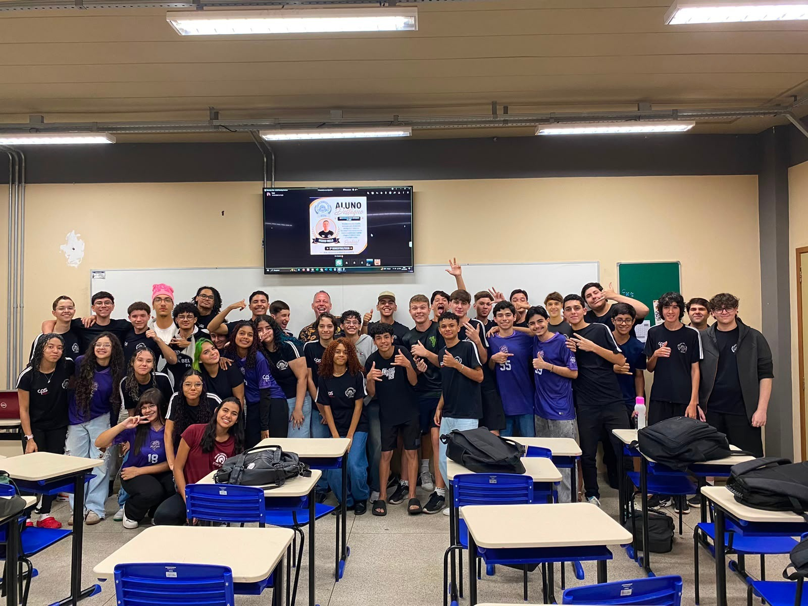
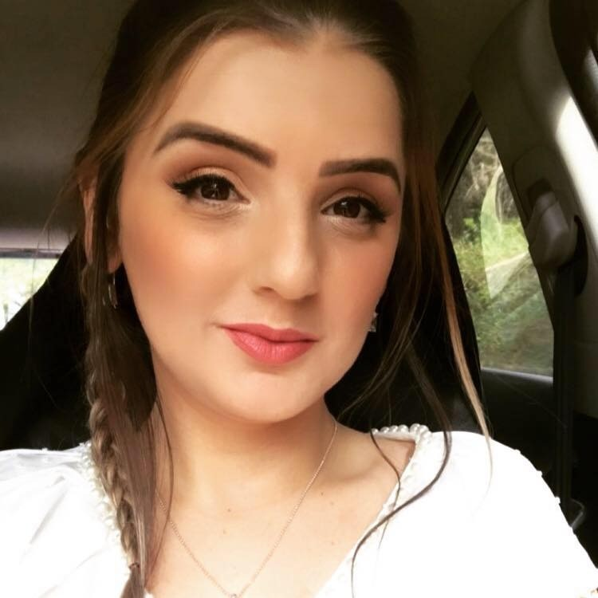

Projeto Integrador • Etec de Nova Odessa
Créditos do Projeto
Conheça as pessoas e a equipe que contribuíram para a realização deste projeto.
ETEC DE NOVA ODESSA
Nossa Turma & Curso
Homenagem e créditos especiais à nossa turma e aos orientadores pelo empenho e dedicação no desenvolvimento deste projeto.

Instituição
Etec de Nova Odessa
Curso
Informática para Internet
Projeto
Site Temático de Música
Equipe Técnica
Desenvolvedores
Desenvolvedores responsáveis pela elaboração do projeto.

Luana
Desenvolvedora / Designer
Otávio
Desenvolvedor / Designer
Corpo Docente
Professores orientadores
Professores orientadores responsáveis pelo acompanhamento pedagógico.
Samuel Santos
Professor orientador do projeto